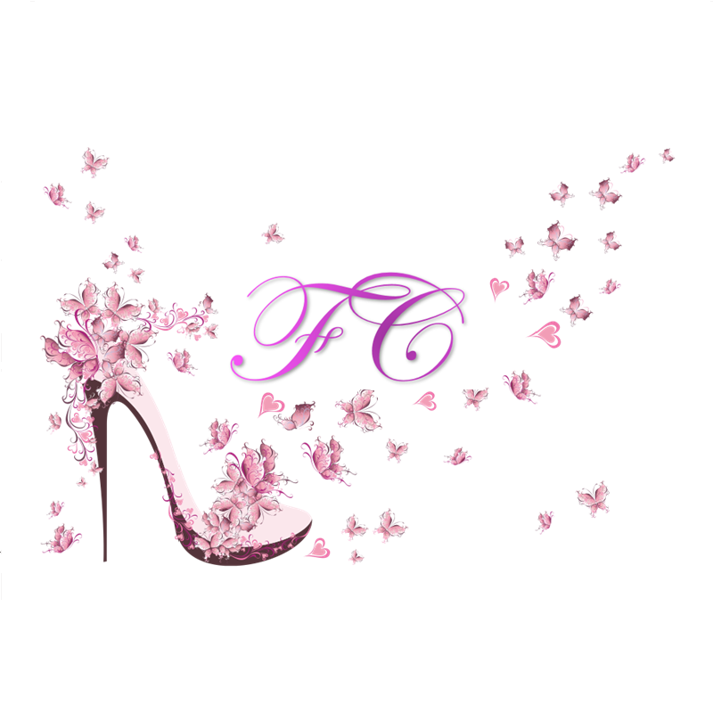

Es un conjunto de prendas de vestir, adornos y complementos basados en gustos, usos y costumbres que se utilizan por una mayoría durante un periodo de tiempo determinado y que marcarán tendencia según la duración del mismo; aunque también la moda se refiere a algo que se repite muchas veces, en este caso, las prendas de vestir. La moda es fiel reflejo de la sociedad y siempre ha estado muy marcada por el momento económico o social. Si nos paramos a analizar la historia de la moda, grandes cambios han surgido en los momentos de crisis. Tan sólo viendo el modo de vestir de los ciudadanos ya podemos ser capaces de ubicarlos en una época determinada. La sociedad de consumo de masas empezó a desempeñar un papel central en el momento en el que la moda se empezó a entender como la necesidad de marcar una distinción entre cada individuo, de lo cual hablaban Pierre Bourdieu y Jean Baudrillard.
La moda forma parte de nuestro contexto como personas, influye en diferentes aspectos de nuestras vidas, desde lo que comemos y bebemos hasta los lugares que debemos frecuentar. Actualmente, el simple hecho de vestir trae consigo factores tan diversos como son la autoestima, la seguridad, la experiencia estética, las prácticas del consumo e imitación o el deseo de la inclusión. Nunca se debe olvidar que todas las modas son peligrosas desde el momento en el que se vuelven extremas. Los medios de comunicación masiva son y han sido una importante herramienta en el campo de la información y en la difusión de la misma, ya que pueden llegar a cualquier parte del mundo en muy poco tiempo debido al proceso de globalización. Son creadores de una nueva cultura y reorganización global del mercado, generando millones de ingresos a nivel mundial y contando con una influencia tal en la sociedad contemporánea que pocos igualan el poder que se les ha conferido. La moda se encuentra fuertemente ligada a estos medios de comunicación y está controlada por ellos, pues contribuyen a los procesos de socialización.
Vivimos en la era de la comunicación: los medios nos hacen cómplices de información de todo tipo y son los encargados de enseñarnos a modelar las percepciones que tenemos de la realidad. Estos medios bombardean a toda la población, aunque su blanco son principalmente adolescentes y adultos jóvenes, con series, anuncios de televisión, programas, reality shows, redes sociales como Instagram y Facebook, revistas o música, entre otros. Todo esto nos lleva a un nuevo individualismo multicultural. El impacto de las redes sociales y la tecnología entre los jóvenes, basándose en los conceptos sociológicos de grupo y de relaciones primarias, generan entre los jóvenes una necesidad de identidad.
La moda y las marcas no solo acogen el deseo de imitar a otras personas o a una comunidad determinada, sino de expresar la individualidad; esto es, aunque la indumentaria indica nuestra afiliación a comunidades concretas y expresa valores, ideas y estilos de vida compartidos, no queremos ser clones vestidos de forma idéntica a los miembros de esa comunidad. La ropa que elegimos llevar representa un compromiso entre las exigencias del mundo social, el medio al que pertenecemos y nuestros deseos individuales.
Una moda que tenga éxito capta el estado de ánimo que está surgiendo. La moda, como discurso y como práctica, encarna al cuerpo, haciéndolo social e identificable y explica cómo esta construcción del cuerpo a través de la ropa es de considerable importancia para el desarrollo de la sociedad moderna. A lo largo de la historia, las distintas culturas, ciudades y grupos sociales han utilizado indumentaria perteneciente a la moda como soporte para hacer manifestación pública de su universo particular simbólico, es decir, sus ideologías, credos, cultura emocional, tradiciones, etc.; al igual que como un elemento comunicativo para informar sobre el grupo que la crea.
También los individuos, tomados en términos de identidad personal, perciben que “el vestido habla” y cumple una función socializadora en cuanto a que lo que nos ponemos contribuye al proceso de creación de nuestra imagen, entendida en términos, no de lo que realmente somos, sino de cómo nos perciben los demás. Así, la moda se ha convertido en la expresión cultural de gustos, estilos de vida o la identidad personal, en otras palabras, en una metacultura capaz de expandirse con la ayuda de los medios de comunicación social, que mediante la publicidad y marketing, segmentan el mercado y se dirigen a las masas de forma personalizada; explotando el rol de adquisición y construcción de la personalidad expresada mediante objetos de consumo que se convierten en una extensión de lo que somos.
Se sabe que existe una fuerte compatibilidad entre las emociones, el consumo de moda y el color, sean cuales sean los arraigos culturales o los diferentes tipos de población analizados; es decir, el color muestra correspondencia en cuanto a su significado y está asociado a las emociones.
Además, a partir del análisis de las encuestas realizadas en una única región, se demuestra una fuerte tendencia a obedecer las preferencias de color tanto en la toma de decisiones de ingreso en establecimientos de consumo como al evento de la compra en sí; con resultados concluyentes y definitivos en su mayoría, lo que permite inferir que el consumo está afectado por el color y que se puede influenciar al consumidor hasta tal punto de que este desista de consumir un objeto por no encontrar su tonalidad favorita.
El vínculo del color con el consumo de moda no es consistente y genera conflictos con respecto a los significados del color, pero se concluye que a raíz de los efectos del color en las emociones de los individuos, el objeto debe contemplar las tendencias y gamas cromáticas del color desde la perspectiva del diseño para poder dar cobertura a la mayor cantidad de individuos posible.
La tendencia es un estilo, que en moda se manifiesta a través de la ropa y los complementos, que queda plasmado de forma continua, durante un periodo de tiempo, en un lugar concreto. La tendencia en moda implica ser original, diferente y exclusivo, en el momento que una tendencia se alarga en el tiempo se convierte en obsoleta dando lugar a otra nueva.
La palabra final siempre la tiene el público, un diseñador puede proponer ideas pero si el público no las emplea y no se ven en la calle estas no salen hacia adelante. De ahí la importancia en la actualidad del Street style (estilo de la calle). Los nuevos medios de comunicación propician que las tendencias evolucionen de una forma muy rápida.
Por ello las tendencias en moda suelen ser muy efímeras. Antes sólo encontrábamos referentes de estilo en las personas relevantes que aparecían en los medios de comunicación. En la actualidad Internet facilita el hecho de que los referentes de estilo ya no sean las personas famosas sino la gente normal.
CONTACTO: Twitter: @thefashionchic Email: thefashion.chic.21@gmail.com WhatsApp + 55 28 98 11 21 o llamanos al: 55 1552 3000